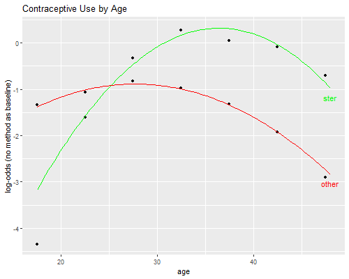

{% include r.css %}


<div id="c6s2" class="section level2 first">
<h2 class="first">6.2 The Multinomial Logit Model</h2>
<p>Make sure you read the data as shown in <a href="c6s1">Section
6.1</a>.</p>
<pre class="r"><code>&gt; library(haven)
&gt; library(dplyr)
&gt; library(tidyr)
&gt; cuselong &lt;- read_dta(&quot;https://grodri.github.io/datasets/elsalvador1985.dta&quot;) |&gt; 
+   mutate(ageg=as_factor(ageg))
&gt; cuse &lt;- pivot_wider(cuselong, names_from=cuse, values_from=cases)
&gt; names(cuse)[2:4] &lt;- c(&quot;ster&quot;, &quot;other&quot;, &quot;none&quot;)</code></pre>
<p>We start with multinomial logit models treating age as a predictor
and contraceptive use as the outcome. R has several functions that can
fit multinomial logit models. We will emphasize the classic
<code>multinom</code> in Venables and Ripley’s <code>nnet</code> package
because it is simple, does everything we need, and is already included
in your R installation. Alternatives include <code>mlogit</code> and
<code>mnlogit</code>; these fit a wider variety of models, but are a bit
harder to use.</p>
<div id="age-as-a-factor" class="section level3">
<h3>Age as a Factor</h3>
<p>Obviously the model that treats age as a factor with 7 levels is
saturated for this data. We can easily obtain the log-likelihood, and
predicted values if we needed them. <span class="r">By default
<code>multinom</code> picks the first response category as the
reference. We take care of that by putting “no method”
first.`</span>’</p>
<pre class="r"><code>&gt; library(nnet)
&gt; cuse$Y &lt;- as.matrix(cuse[,c(&quot;none&quot;,&quot;ster&quot;,&quot;other&quot;)])
&gt; msat &lt;- multinom(Y ~ ageg, data=cuse)</code></pre>
<pre><code># weights:  24 (14 variable)
initial  value 3477.107894 
iter  10 value 2910.092190
iter  20 value 2872.978246
final  value 2872.899103 
converged</code></pre>
<pre class="r"><code>&gt; msat</code></pre>
<pre><code>Call:
multinom(formula = Y ~ ageg, data = cuse)

Coefficients:
      (Intercept) ageg20-24 ageg25-29 ageg30-34  ageg35-39  ageg40-44 ageg45-49
ster    -4.348180 2.7387387 4.0163534 4.6259663 4.39494512  4.2589552  3.649552
other   -1.335857 0.2643796 0.5039453 0.3533843 0.01143483 -0.5859748 -1.571018

Residual Deviance: 5745.798 
AIC: 5773.798 </code></pre>
<p>You could use <code>summary(msat)</code> to obtain standard errors as
well, but we’ll skip those.</p>
</div>
<div id="linear-and-quadratic-effects" class="section level3">
<h3>Linear and Quadratic Effects</h3>
<p>Following the notes, we will consider a model with linear and
quadratic effects of age. To this end we define the midpoints of age and
its square. For consistency with the notes we will not center age before
computing the square, although I generally recommend that.</p>
<pre class="r"><code>&gt; library(dplyr)
&gt; cuse &lt;- mutate(cuse, age = seq(17.5,47.5,5)[ageg], agesq = age^2)
&gt; cuse$Y = as.matrix(cuse[, c(&quot;none&quot;, &quot;ster&quot;, &quot;other&quot;)])
&gt; mlq &lt;- multinom(Y ~ age + agesq, data=cuse)</code></pre>
<pre><code># weights:  12 (6 variable)
initial  value 3477.107894 
iter  10 value 2883.272291
final  value 2883.136389 
converged</code></pre>
<pre class="r"><code>&gt; summary(mlq)</code></pre>
<pre><code>Call:
multinom(formula = Y ~ age + agesq, data = cuse)

Coefficients:
      (Intercept)       age        agesq
ster   -12.618330 0.7097288 -0.009732882
other   -4.549838 0.2640771 -0.004758144

Std. Errors:
       (Intercept)         age        agesq
ster  0.0003634951 0.006137073 0.0001616953
other 0.0004850755 0.007198081 0.0002166951

Residual Deviance: 5766.273 
AIC: 5778.273 </code></pre>
<pre class="r"><code>&gt; B &lt;- coef(mlq)
&gt; -0.5 * B[,&quot;age&quot;]/B[,&quot;agesq&quot;]      </code></pre>
<pre><code>    ster    other 
36.46036 27.75000 </code></pre>
<p>Compare the parameter estimates with Table 6.2 in the notes. As usual
with quadratics, it is easier to plot the results, which we do below.
The log-odds of using sterilization rather than no method increase
rapidly with age to reach a maximum at 36.5. The log-odds of using a
method other than sterilization rather than no method, increase slightly
to reach a maximum at age 27.8 and then decline. (The turning points
were calculated by setting the derivatives to zero.)</p>
<pre class="r"><code>&gt; anova(multinom(Y~1, data=cuse), mlq)</code></pre>
<pre><code># weights:  6 (2 variable)
initial  value 3477.107894 
final  value 3133.450437 
converged</code></pre>
<pre><code>Likelihood ratio tests of Multinomial Models

Response: Y
        Model Resid. df Resid. Dev   Test    Df LR stat. Pr(Chi)
1           1        12   6266.901                              
2 age + agesq         8   5766.273 1 vs 2     4 500.6281       0</code></pre>
<p>The model chi-squared, which as usual compares the current and null
models, indicates that the hypothesis of no age differences in
contraceptive choise is soundly rejected with a chi-squared of 500.6 on
4 d.f. To see where the d.f. come from, note that the current model has
six parameters (two quadratics with three parameters each) and the null
model of course has only two (the two constants).</p>
<p>To test the goodness of fit of the model we compare it with the model
that treats age as a factor, which is saturated for these data. The
“deviances” reported by <code>multinom</code>’ for these models are
5766.273 and 5745.798. They are calculated as <em>-2logL</em>, where
<em>logL</em> is the individual data log-likelihood. This is why the
“deviance” for the saturated model is not zero. But we can compute
differences among deviances, which are correct.</p>
<pre class="r"><code>&gt; anova(mlq, msat) </code></pre>
<pre><code>Likelihood ratio tests of Multinomial Models

Response: Y
        Model Resid. df Resid. Dev   Test    Df LR stat.     Pr(Chi)
1 age + agesq         8   5766.273                                  
2        ageg         0   5745.798 1 vs 2     8 20.47457 0.008682221</code></pre>
<pre class="r"><code>&gt; # or &quot;by hand&quot;
&gt; x2 &lt;- deviance(mlq) - deviance(msat)
&gt; data.frame(chisq=x2, pvalue=pchisq(x2, 8, lower.tail=FALSE))</code></pre>
<pre><code>     chisq      pvalue
1 20.47457 0.008682221</code></pre>
<p>The deviance of 20.47 on 8 d.f. is significant at the 1% level, so we
have evidence that this model does not fit the data. We explore the lack
of fit using a graph.</p>
</div>
<div id="plotting-observed-and-fitted-logits" class="section level3">
<h3>Plotting Observed and Fitted Logits</h3>
<p>Let us do Figure 6.1, comparing observed and fitted logits.</p>
<p>We plot observed versus fitted logits, using markers for the observed
values and smooth curves for the quadratics.</p>
<pre class="r"><code>&gt; library(ggplot2)
&gt; cuse &lt;- mutate(cuse, obs.s = log(ster/none), obs.o = log(other/none))
&gt; fit1 &lt;- function(x) B[1,1] + B[1,2]*x + B[1,3]*x^2
&gt; fit2 &lt;- function(x) B[2,1] + B[2,2]*x + B[2,3]*x^2
&gt; png(&quot;fig61r.png&quot;, width=500, height=400)
&gt; ggplot(cuse, aes(age, obs.s)) + geom_point() + geom_point(aes(age, obs.o)) +
+       geom_function(fun=fit1, color=&quot;green&quot;) + geom_function(fun=fit2, color=&quot;red&quot;) +
+       ggtitle(&quot;Contraceptive Use by Age&quot;) + ylab(&quot;log-odds (no method as baseline)&quot;) +
+   annotate(geom=&quot;text&quot;, x=48, y=fit1(48)-.2, label=&quot;ster&quot;, color=&quot;green&quot;) +
+   annotate(geom=&quot;text&quot;, x=48, y=fit2(48)-.2, label=&quot;other&quot;, color=&quot;red&quot;) 
&gt;     dev.off()</code></pre>
<pre><code>png 
  2 </code></pre>
<p></p>
<p>The graph suggests that most of the lack of fit comes from
overestimation of the relative odds of being sterilized compared to
using no method at ages 15-19. Adding a dummy for this age group
confirms the result:</p>
<pre class="r"><code>&gt; cuse &lt;- mutate(cuse, age1519 = ageg==&quot;15-19&quot;)
&gt; md &lt;- multinom(Y ~ age + agesq + age1519, data=cuse)</code></pre>
<pre><code># weights:  15 (8 variable)
initial  value 3477.107894 
iter  10 value 2880.318358
final  value 2878.946949 
converged</code></pre>
<pre class="r"><code>&gt; anova(md, msat)</code></pre>
<pre><code>Likelihood ratio tests of Multinomial Models

Response: Y
                  Model Resid. df Resid. Dev   Test    Df LR stat.    Pr(Chi)
1 age + agesq + age1519         6   5757.894                                 
2                  ageg         0   5745.798 1 vs 2     6 12.09569 0.05986779</code></pre>
<p>The deviance is now only 12.10 on 6 d.f., so we pass the goodness of
fit test. (We really didn’t need the dummy in the equation for other
methods, so the gain comes from just one d.f.)</p>
<p>An important caveat with multinomial logit models is that we are
modeling odds or <em>relative</em> probabilities, and it is always
possible for the odds of one category to increase while the probability
of that category declines, simply because the odds of another category
increase more. To examine this possibility one can always compute
predicted probabilities.</p>
<p>We pursue these issues at greater length in a discussion of the
interpretation of multinomial logit coefficients, including the
calculation of continuous and discrete marginal effects, in <a
href="mlogit">an analysis available here</a>.</p>
<p><small>Updated fall 2022</small></p>
</div>
</div>
